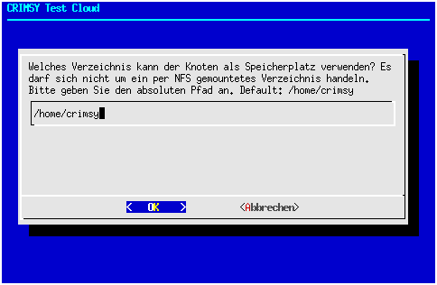
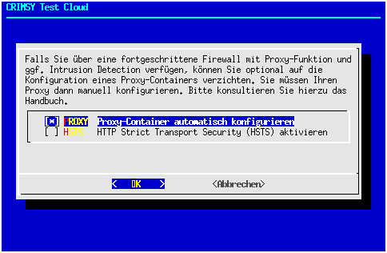
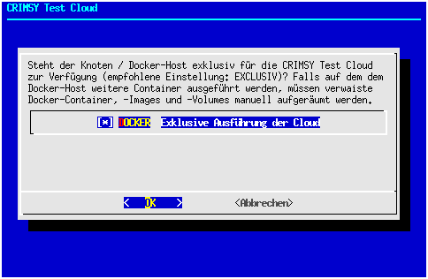
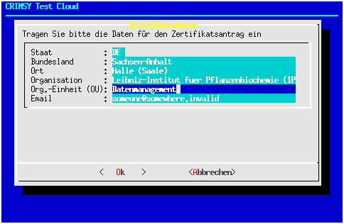
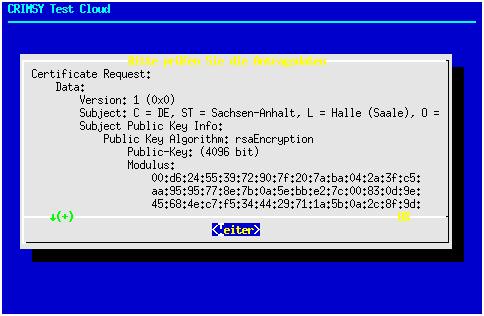

Konfigurationsskript¶
Das digital signierte Konfigurationsskript steht auf der Distributions-Webseite der Cloud zum Herunterladen zur Verfügung. Die URL und die Credentials für den Zugriff werden vom Verwalter per Email mitgeteilt. Die Beispielwerte in den hier dargestellten Code-Schnipseln sind entsprechend zu ersetzen; zur Vereinfachung enthält die Distributionswebseite entsprechende Vorlagen für Copy & Paste.
wget -O configure.sh.sig \
https://test.crimsy.invalid/TEST/configure.sh.sig
wget -O chain.txt \
https://test.crimsy.invalid/TEST/chain.txt
wget -O devcert.pem \
https://test.crimsy.invalid/TEST/devcert.pem
sha256sum chain.txt
openssl verify -CAfile chain.txt devcert.pem
openssl smime -verify -in configure.sh.sig -certfile \
devcert.pem -CAfile chain.txt -out configure.sh
Zur Prüfung der Authentizität vergleichen Sie bitte die Ausgabe in Ihrem Terminal mit den kursiv markierten Zeilen in folgendem Block, wobei der Hash-Code cloudspezifisch ist:
| [...] | | ~> sha256sum chain.txt
| 725 ... Hash Code der Cloud-CA-Zertifikatskette ... 65f chain.txt
| ~> openssl verify -CAfile chain.txt devcert.pem
| devcert.pem: OK
| ~> openssl smime -verify -in configure.sh.sig -certfile \
| devcert.pem -CAfile chain.txt -out configure.sh
| Verification successful
Bitte benachrichtigen Sie uns (bzw. Ihren Cloud-Verwalter) unbedingt, falls bei der Prüfung Ungereimtheiten auftreten. Falls die Signaturprüfung des Konfigurationsskripts erfolgreich war, können Sie das Skript anschließend aufrufen:
chmod +x configure.sh
./configure.sh
Das Konfigurationsskript beginnt mit einer Informationsseite:

Achtung: Da unsere Ressourcen sehr begrenzt sind, kann das Konfigurationsskript nur eine rudimentäre Prüfung der Eingabeparameter vornehmen. Durch entsprechend bösartige Eingaben (Backquotes “`”, $-Zeichen usw.) können wahrscheinlich Datenverluste und möglicherweise auch anderweitige Schäden provoziert werden. Bitte kontaktieren Sie uns, wenn Sie eines der Zeichen `”’$ verwenden müssen.
Als nächstes wird der Speicherort für die Daten der Cloud festgelegt:

Im einfachsten Fall können sie die Default-Einstellung übernehmen. Die größtmögliche Ausbaufähigkeit sichern Sie sich, wenn sie das Dateisystem als “logical volume” (LVM, ZFS, …) anlegen. Im weiteren Verlauf wird dieser Speicherort in der Variable $LBAC_DATASTORE gespeichert. Auch in der Dokumentation wird diese Variable entsprechend verwendet. Falls das Konfigurationsskript im angegebenen Speicherort eine Konfigurationsdatei aus früheren Läufen des Skripts finden kann, werden Sie gefragt, ob Sie diese einlesen wollen:
 In den allermeisten Fällen sollten Sie die Datei einlesen lassen, Sie sparen dadurch Tipparbeit. Eine kritische Prüfung aller Eingaben bleibt dennoch unerläßlich. Das Skript zeigt als nächstes den Unique Identifier des Knotens an:
In den allermeisten Fällen sollten Sie die Datei einlesen lassen, Sie sparen dadurch Tipparbeit. Eine kritische Prüfung aller Eingaben bleibt dennoch unerläßlich. Das Skript zeigt als nächstes den Unique Identifier des Knotens an:
 An diesem Wert sollten Sie nur Änderungen vornehmen, wenn Sie von uns dazu aufgefordert werden. Die nächste Frage ist eine einfache Kontrollfrage, ob Ihr System über ausreichende Ressourcen verfügt:
An diesem Wert sollten Sie nur Änderungen vornehmen, wenn Sie von uns dazu aufgefordert werden. Die nächste Frage ist eine einfache Kontrollfrage, ob Ihr System über ausreichende Ressourcen verfügt:
 Wir hoffen, Sie können diese Frage mit “Ja” beantworten. Im darauffolgenden Formular können Sie entscheiden, ob Ihr Knoten einen eigenen Proxy konfigurieren soll oder ob die Proxyfunktion von einem bereits in Ihrer Einrichtung bestehenden Proxy übernommen werden soll. Standardmäßig ist der interne Proxy aktiviert und übernimmt die Verschlüsselung des Datenverkehrs. Diese Variante ist für Sie mit dem kleinsten Aufwand verbunden, erlaubt jedoch beispielsweise nicht die Einbindung in ein Intrusion Detection System (IDS). Falls Ihre Einrichtung bereits einen Proxy (oder mehrere Proxies) betreibt, können Sie diese(n) auch für den einzurichtenden Knoten benutzen. Der Datenverkehr des Knotens erfolgt dann unverschlüsselt und erlaubt Ihnen die Anbindung an ein IDS. Die Anforderungen sind in einem separaten Abschnitt beschrieben. Sofern Sie Ihren Proxy mit einem offiziellen Zertifikat betreiben, können Sie das Feature Http Strict Transport Security (HSTS) aktivieren. Falls Sie kein offizielles Zertifikat (z.B. DFN) beantragt haben, wird diese Einstellung ignoriert.
Wir hoffen, Sie können diese Frage mit “Ja” beantworten. Im darauffolgenden Formular können Sie entscheiden, ob Ihr Knoten einen eigenen Proxy konfigurieren soll oder ob die Proxyfunktion von einem bereits in Ihrer Einrichtung bestehenden Proxy übernommen werden soll. Standardmäßig ist der interne Proxy aktiviert und übernimmt die Verschlüsselung des Datenverkehrs. Diese Variante ist für Sie mit dem kleinsten Aufwand verbunden, erlaubt jedoch beispielsweise nicht die Einbindung in ein Intrusion Detection System (IDS). Falls Ihre Einrichtung bereits einen Proxy (oder mehrere Proxies) betreibt, können Sie diese(n) auch für den einzurichtenden Knoten benutzen. Der Datenverkehr des Knotens erfolgt dann unverschlüsselt und erlaubt Ihnen die Anbindung an ein IDS. Die Anforderungen sind in einem separaten Abschnitt beschrieben. Sofern Sie Ihren Proxy mit einem offiziellen Zertifikat betreiben, können Sie das Feature Http Strict Transport Security (HSTS) aktivieren. Falls Sie kein offizielles Zertifikat (z.B. DFN) beantragt haben, wird diese Einstellung ignoriert.
 Mittlerweile verwenden viele Linux-Distributionen SystemD als Init-System. Im Rahmen des Konfigurationsskripts wird abgefragt, für welches System der Knoten konfiguriert werden soll, damit CRIMSy nach einem Neustart des Knotens automatisch starten kann. SystemV-Init-Skripte existieren für alle anderen Distributionen und als Fallback-Lösung; es finden allerdings keine Tests statt.
 Ebenso ist für die Verwaltung des Knotens wichtig, ob auf dem Knoten noch andere Docker-Container ausgeführt werden. Die parallele Ausführung weiterer Container bedeutet, das beim Aufräumen von Docker-Containern, -Images und Volumes weniger aggressiv vorgegangen werden muss. Deshalb wird von der parallelen Ausführung weiterer Container auf dem Knoten dringend abgeraten.
Ebenso ist für die Verwaltung des Knotens wichtig, ob auf dem Knoten noch andere Docker-Container ausgeführt werden. Die parallele Ausführung weiterer Container bedeutet, das beim Aufräumen von Docker-Containern, -Images und Volumes weniger aggressiv vorgegangen werden muss. Deshalb wird von der parallelen Ausführung weiterer Container auf dem Knoten dringend abgeraten.
 Als nächstes wird der Name Ihrer Einrichtung (Ihres Instituts) abgefragt. Geben Sie bitte die vollständige offizielle deutsche Bezeichnung an (ohne Adresse). Der hier abgefragte Name wird den Nutzern der Cloud angezeigt. Der Wert dieses Feldes wird außerdem in das Formular für den Zertifikatsantrag übertragen, kann dort aber angepasst werden, wenn für den Zertifikatsantrag eine andere Schreibung (z.B. wegen Umlauten) gewünscht wird.
 Da der vollständige Name des Instituts manchmal unhandlich lang sein kann, wird im folgenden Formular eine Kurzbezeichnung abgefragt. Die Kurzbezeichnung sollte sich üblicherweise aus einer Abkürzung des Institutsnamens und dem Ort des Hauptsitzes zusammensetzen:
Da der vollständige Name des Instituts manchmal unhandlich lang sein kann, wird im folgenden Formular eine Kurzbezeichnung abgefragt. Die Kurzbezeichnung sollte sich üblicherweise aus einer Abkürzung des Institutsnamens und dem Ort des Hauptsitzes zusammensetzen:
 Eine weitere wichtige Information ist die Emailadresse einer Kontaktperson, die für die Administration des Knotens zuständig ist. Selbstverständlich ist auch eine Sammeladresse (z.B. helpdesk@somewhere.invalid) möglich.
Eine weitere wichtige Information ist die Emailadresse einer Kontaktperson, die für die Administration des Knotens zuständig ist. Selbstverständlich ist auch eine Sammeladresse (z.B. helpdesk@somewhere.invalid) möglich.
 Sowohl für die Erstellung des Zertifikats (Subject Alternate Names) als auch für die Konfiguration des Proxy werden die Hostnamen Ihres Knotens benötigt. Dabei kann sich der Hostname im Intranet vom Hostnamen im Internet unterscheiden, weshalb beide abgefragt werden. Die Portnummer für die Kommunikation aus dem Internet ist auf 8443 festgelegt und kann nicht geändert werden.
Sowohl für die Erstellung des Zertifikats (Subject Alternate Names) als auch für die Konfiguration des Proxy werden die Hostnamen Ihres Knotens benötigt. Dabei kann sich der Hostname im Intranet vom Hostnamen im Internet unterscheiden, weshalb beide abgefragt werden. Die Portnummer für die Kommunikation aus dem Internet ist auf 8443 festgelegt und kann nicht geändert werden.
 { width=50%}
{ width=50%}  { width=50%}
In den folgenden Schritten muss für den Knoten ein Zertifkatsrequest erstellt werden. Falls jedoch bereits ein Zertifikatsrequest ausgestellt wurde, kann dieser geprüft und gegebenenfalls wiederverwendet werden (hier nicht gezeigt).
{ width=50%}
In den folgenden Schritten muss für den Knoten ein Zertifkatsrequest erstellt werden. Falls jedoch bereits ein Zertifikatsrequest ausgestellt wurde, kann dieser geprüft und gegebenenfalls wiederverwendet werden (hier nicht gezeigt).
 { width=50% }
{ width=50% }  { width=50% }
Das Konfigurationsskript übernimmt dabei die Felder “Organisation” und “Email” aus den bislang erfassten Daten; es sind aber Änderungen möglich. Zusätzlich müssen der Staat (Vorauswahl “DE”), das Bundesland, der Ort und die Organisationseinheit (Vorauswahl ist “Verwaltung”) eingegeben werden.
{ width=50% }
Das Konfigurationsskript übernimmt dabei die Felder “Organisation” und “Email” aus den bislang erfassten Daten; es sind aber Änderungen möglich. Zusätzlich müssen der Staat (Vorauswahl “DE”), das Bundesland, der Ort und die Organisationseinheit (Vorauswahl ist “Verwaltung”) eingegeben werden.
 Nach Erfassung der Daten wird mit OpenSSL ein Zertifikatsrequest erzeugt. Auf Ihrem Terminal werden vorübergehend einige Ausgaben des Programms sichtbar sein. Im nächsten Formular sind Sie aufgefordert, die Daten des Zertifikatsrequests zu prüfen. Mit den Pfeiltasten bzw. PageUp und PageDown können Sie den Text scrollen.
 Falls alle Daten (auch die Hostnamen) richtig sind, können Sie dies im nächsten Formular bestätigen:
 Falls Sie korrigieren möchten, kehrt das Skript zur Erfassung der (vollqualifizierten) Hostnamen zurück. Ansonsten erscheint eine Informationsseite zum Zertifikatsantrag und zur Verwendung eines “offiziellen” Zertifikats für die Nutzerkommunikation:
Falls Sie korrigieren möchten, kehrt das Skript zur Erfassung der (vollqualifizierten) Hostnamen zurück. Ansonsten erscheint eine Informationsseite zum Zertifikatsantrag und zur Verwendung eines “offiziellen” Zertifikats für die Nutzerkommunikation:
 Die Konfiguration ist damit abgeschlossen und das Ergebnis sollte noch abgespeichert werden:
Die Konfiguration ist damit abgeschlossen und das Ergebnis sollte noch abgespeichert werden:
 Die abgespeicherte Konfiguration wird anschließend verschlüsselt:
Die abgespeicherte Konfiguration wird anschließend verschlüsselt:
 … und das Konfigurationsskript verabschiedet sich mit der Bitte, uns die verschlüsselte Konfiguration zukommen zu lassen (z.B. per Email).
… und das Konfigurationsskript verabschiedet sich mit der Bitte, uns die verschlüsselte Konfiguration zukommen zu lassen (z.B. per Email).
Direkt nach Abschluß des Konfigurationsskripts sollte auch das offizielle Zertifikat für den Knoten beantragt werden, das für die Kommunikation mit den Browsern der Nutzer verwendet wird. Normalerweise sollte es ausreichend sein, den unter $LBAC_DATASTORE/etc/lbac_cert.req gespeicherten Zertifikatsrequest des Konfigurationsskripts bei einer CA (z.B. der DFN-PKI) einzureichen. Falls die CA nicht bereit ist, ein Zertifikat für diesen Request auszustellen, müssen Sie selbst einen passenden Request erzeugen.
Das weitere Vorgehen zur Installation des offiziellen Zertifikats richtet sich danach, ob Sie (1) das Zertifikat mit dem Zertifikatsrequest des Konfigurationsskripts beantragt haben oder (2) einen unabhängigen Request erzeugt haben. Im zweiten Fall wurde nämlich ein neuer privater Schlüssel erzeugt, während im ersten Fall die privaten Schlüssel identisch sind. Entsprechendes gilt auch für die Passworte der privaten Schlüssel.
Info: Das offizielle Zertifikat (und ggf. der private Schlüssel und das Passwort) müssen momentan nach der Konfiguration manuell in das Konfigurationsverzeichnis
$LBAC_DATASTORE/etc/kopiert werden. Die Dateinamen sind festgelegt und lauten:
Datei Beschreibung
official_cert.pem Das offizielle Zertifikat im PEM-Format
official_cert.key Der private Schlüssel des offiziellen Zertifikats. Falls das offizielle Zertifikat mit dem vom Konfigurationsskript erzeugten Zertifikatsrequest beantragt wurde, muss der private Schlüssel lbac_cert.key kopiert werden. Ansonsten verwenden Sie bitte den privaten Schlüssel Ihres unabhängigen Zertifikatsrequests.
official_cert.passwd Das Passwort für den privaten Schlüssel des offiziellen Zertifikats. Falls der private Schlüssel lbac_cert.key dupliziert wurde (s.o.), muss auch die Passwortdatei lbac_cert.passwd kopiert werden. Ansonsten hinterlegen Sie bitte das Passwort für den privaten Schlüssel in dieser Datei.